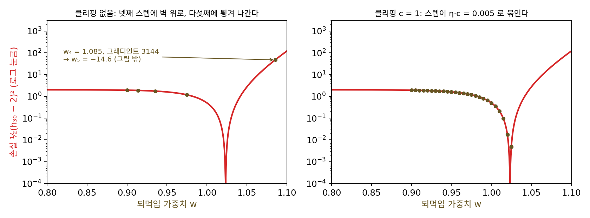
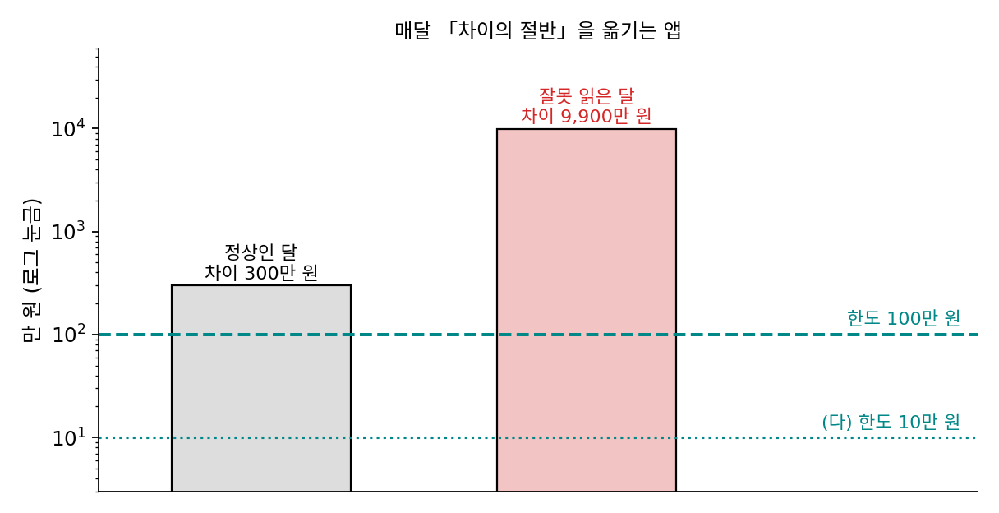
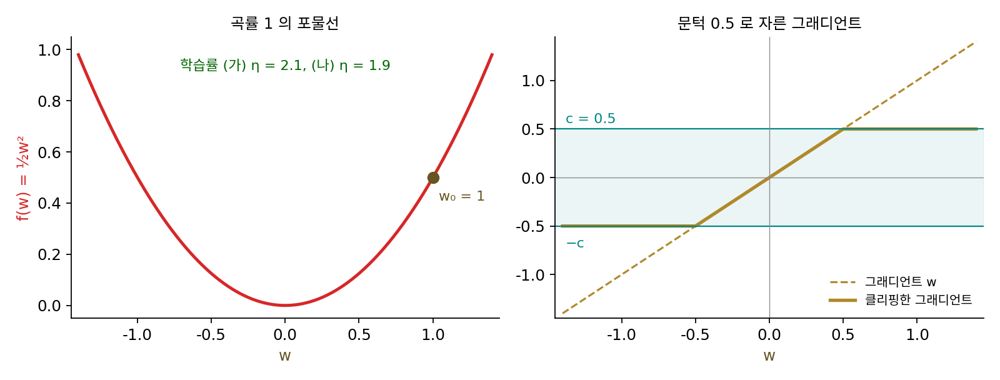
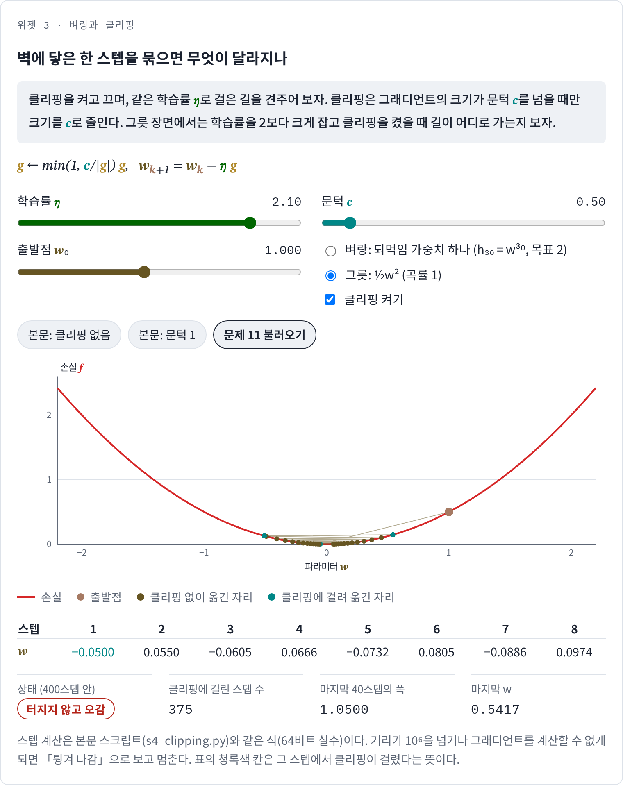
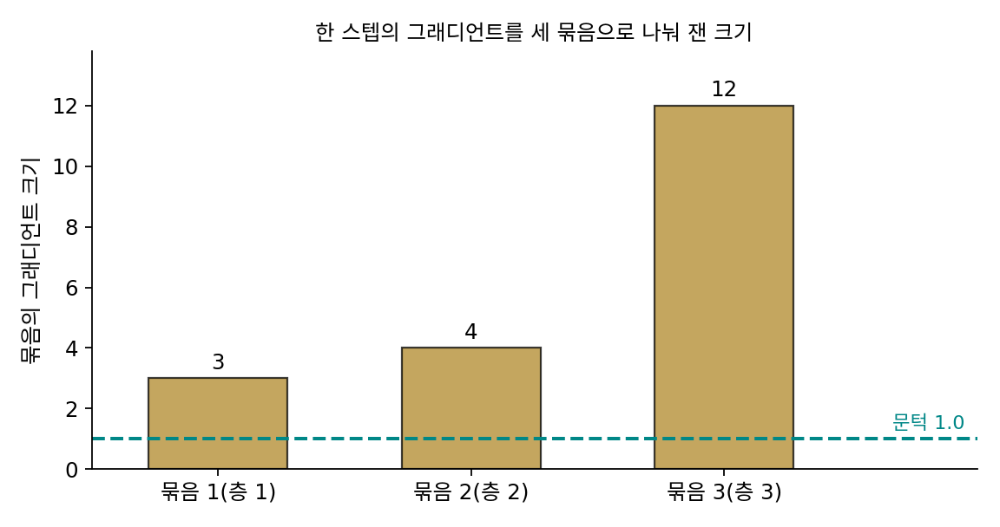

그래디언트 클리핑: 벼랑에서 스텝을 묶는다
학습률의 상한은 손실이 가장 가파르게 휜 곳이 정했다. 그런데 그 「가장 가파른 곳」이 손실 지형의 거의 모든 곳에서는 완만하다가 아주 좁은 한 곳에서만 깎아지른 벽처럼 솟아 있다면 어떨까? 그 벽에 맞춰 학습률을 줄이면 나머지 넓은 평지에서 스텝이 하염없이 느려진다. 그렇다고 평지에 맞추면 벽에 닿는 한 스텝에서 그래디언트가 수천 배로 커져 파라미터가 엉뚱한 곳으로 날아간다. 학습률을 바꾸지 않고 그 한 스텝만 막을 수는 없을까?
역사: 순환 신경망의 벼랑
이 일이 가장 자주 터진 곳은 순환 신경망(같은 가중치를 시간 스텝마다 되풀이해 곱하는 신경망)이었다. 같은 가중치를 수십 번 곱하면, 그 가중치가 1보다 조금만 커도 결과가 폭발하고 조금만 작아도 사라진다. 그래디언트도 마찬가지라서 학습 도중 그래디언트의 크기가 갑자기 수천 배로 뛰는 일이 생겼다. 토마시 미콜로프(Tomáš Mikolov)는 박사 논문의 언어 모델 실험에서 그래디언트의 성분이 정한 값을 넘으면 그 값으로 잘라 이 문제를 피했다. 라즈반 파스카누(Razvan Pascanu)는 미콜로프, 요슈아 벤지오(Yoshua Bengio)와 함께 2013년 국제 기계학습 학회(ICML)에 낸 논문 「순환 신경망 학습의 어려움에 대하여」에서 이 현상을 정리했다. 그들은 은닉 단위 하나짜리 순환 신경망의 손실 지형을 그려, 평평한 땅 옆에 곡률이 매우 큰 벽이 솟아 있음을 보였다. 그리고 미콜로프처럼 성분을 따로 자르는 대신 그래디언트 벡터의 길이가 문턱을 넘으면 방향은 그대로 두고 길이만 문턱으로 줄이는 방법을 냈다. 문턱은 여러 스텝의 평균 그래디언트 크기를 보고 정하면 되고, 문턱 값에 그리 민감하지 않다고 적었다.

그래디언트가 너무 크면 자르면 되는 거잖아요. 지금은 clip_grad_norm_ 한 줄인데, 이게 학회 논문이 될 일이었어요?

그 한 줄이 생긴 건 이런 논문들이 정리한 뒤예요. 파이토치는 2016년에 나왔고요. 그리고 자르기 전에 먼저 풀어야 할 게 있었어요. 학습 도중 손실이 한 스텝 만에 튀면, 처음 겪는 사람은 무엇부터 의심할까요?

버그요. 저라면 데이터 읽는 코드나 미분 구현부터 뒤질 것 같아요. 손실 지형 탓이라고는 생각 못 했겠네요.

지형 탓이라는 걸 보이려면 지형을 그려야 하는데, 파라미터가 많으면 어느 단면을 잘라야 벽이 보일지도 모르잖아요.

그래서 파스카누와 동료들은 은닉 단위 하나짜리까지 줄여서 그렸어요. 그만큼 작게 줄여야 평지 옆에 솟은 벽이 눈에 들어왔던 거죠.
벽이 그렇게 좁으면 학습 내내 몇 번 안 닿겠네. 그런데 한 번 닿으면 끝이고.

평지에 맞춘 학습률로 가다가 벽에 닿으면 숫자가 실제로 어떻게 되는지, 가중치 하나짜리 순환 신경망으로 따라가 볼 수 있을까요?
되먹임 가중치 하나짜리 순환 신경망
파스카누와 동료들이 분석에 쓴 가장 단순한 경우를 숫자로 따라가 보자. 입력 없이 은닉 상태 h 하나가 스텝마다 같은 가중치 w를 곱받으므로, h₀ = 1에서 시작하면 t스텝 뒤 hₜ = wᵗ이다. 30스텝 뒤의 값이 2가 되게 w를 학습시키자. 손실은 f(w) = ½(w³⁰ − 2)²이고, 답은 w* = 2^(1/30) = 1.02337이다(길이 30, 목표 2, 출발점 0.9는 이 책에서 고른 값이다). 손실과 그래디언트를 몇 곳에서 재 보면 지형이 한쪽으로 기울어 있다.
| w | h₃₀ = w³⁰ | 그래디언트 f′(w) |
|---|---|---|
| 0.80 | 0.0012 | −0.093 |
| 0.90 | 0.0424 | −2.766 |
| 0.95 | 0.2146 | −12.101 |
| 1.00 | 1.0000 | −30.000 |
| 1.02 | 1.8114 | −10.050 |
| 1.03 | 2.4273 | 30.206 |
| 1.05 | 4.3219 | 286.723 |
| 1.10 | 17.4494 | 7,352.259 |
답의 왼쪽은 그래디언트가 −0.1에서 −30 사이로 완만한데, 오른쪽으로 0.08만 가면 그래디언트가 7,352가 된다. 답 근처의 곡률은 3,437이라 답 근처에서 안전한 학습률은 2/3,437 = 0.00058보다 작아야 한다. 왼쪽 평지에 맞춰 학습률 0.005로 0.9에서 출발해 보자.
| 스텝 | 그냥 경사하강 | 그래디언트 길이를 1로 묶음 |
|---|---|---|
| 1 | 0.9138 | 0.9050 |
| 2 | 0.9351 | 0.9100 |
| 3 | 0.9751 | 0.9150 |
| 4 | 1.0855 | 0.9200 |
| 5 | −14.63 | 0.9250 |
| 6 | 8.6 × 10⁶⁷ | 0.9300 |
| 7 | 계산 불가 | 0.9350 |
그냥 경사하강은 세 스텝 동안 그래디언트가 −2.77, −4.25, −8.00, −22.08로 커지며 순조롭게 다가가다가, 넷째 스텝에서 답을 지나 1.0855에 떨어진다. 1.0855에서의 그래디언트는 3,144이다. 학습률 0.005를 곱하면 15.7만큼 뒤로 날아가 −14.63이 되고, 그다음 스텝은 8.6 × 10⁶⁷이다. 보통의 학습처럼 float32(32비트 실수)로 계산하면 여섯째 값은 float32가 표현할 수 있는 가장 큰 수 3.4 × 10³⁸을 넘어 inf(무한대)가 되고, 일곱째는 nan이다. 벽에 한 번 닿은 것으로 학습이 끝났다.
그래디언트의 길이가 1을 넘을 때 길이만 1로 줄인 쪽은 스텝이 늘 0.005라서, 느리지만 날아가지 않고 23스텝째에 답의 0.01 안쪽에 든다. 이렇게 그래디언트 벡터의 길이가 문턱 c를 넘으면 방향은 두고 길이만 c로 줄인 뒤 스텝을 옮기는 방법을 그래디언트 클리핑 (그래디언트 길이 자르기 / gradient clipping)이라 한다.
그래디언트가 문턱보다 작으면 아무것도 바뀌지 않고, 문턱을 넘으면 한 스텝의 길이가 ηc를 넘지 못한다. 파스카누와 동료들은 이것을 「그 순간의 그래디언트 크기에 맞춰 학습률을 줄이는 것」으로 보았다. 평지에서는 학습률이 그대로이고, 벽에 닿은 스텝에서만 학습률이 잠깐 작아진다.

ML에서: 큰 언어 모델의 문턱 1.0과 손실 폭발
큰 언어 모델은 거의 모두 그래디언트 클리핑을 켜고 학습한다. GPT-3 논문(브라운 외, 2020)은 학습 설정에 「그래디언트의 전체 노름을 1.0에서 자른다」고 적었고(전체 노름은 모든 파라미터의 그래디언트를 한 벡터로 이어 붙여 잰 유클리드 길이다), 구글의 PaLM 논문(차우더리 외, 2022)도 모든 모델에 전체 노름 클리핑 1.0을 썼다고 적었다. 1.0이라는 값은 어떤 정리에서 나온 것이 아니라, 평소 그래디언트 크기를 보고 고른 실무의 기본값에 가깝다.
클리핑이 모든 폭발을 막지는 않는다. PaLM 논문은 가장 큰 모델을 학습하는 동안 클리핑을 켜 두었는데도 손실이 치솟는 일이 스무 번쯤 있었다고 보고했다. 그 팀은 원인을 끝내 찾지 못했고, 손실이 튀기 시작하기 약 100스텝 전의 체크포인트(학습 도중 저장해 둔 파라미터)로 돌아가 그 언저리의 미니배치 200~500개를 건너뛰는 방법으로 피했다. 같은 미니배치를 다른 체크포인트에서 학습하면 튀지 않았으므로, 특정 데이터와 특정 파라미터 상태가 만났을 때 생기는 일로 보았다. 클리핑은 한 스텝의 길이를 묶을 뿐, 잘린 스텝이 가는 방향이 나쁜 곳이 아닌지까지는 보지 못한다.
문제 10. 자동 이체의 한도
저축 앱이 매달 「목표 금액 − 지금 저축액」의 절반을 자동으로 옮기는데, 한 번에 옮길 수 있는 한도는 100만 원이다. (가) 어느 달 앱이 잔고를 잘못 읽어 차이를 9,900만 원으로 계산했다. 한도가 없을 때와 있을 때 각각 얼마가 옮겨지는가? (나) 정상인 달, 차이가 300만 원에서 시작하면 여섯 달 동안 남은 차이는 한도가 없을 때와 있을 때 어떻게 다른가? (다) 한도를 10만 원으로 낮추면 어떤 일이 생기겠는가?

(가)는 한도가 없으면 4,950만 원이 빠져나가요. 큰일이죠. 한도가 있으면 100만 원만요. 그럼 한도는 무조건 낮을수록 안전하겠네요.
(나)를 봐. 한도가 없으면 남은 차이가 150, 75, 37.5, 18.75, 9.38, 4.69만 원이고, 한도가 있으면 첫 달에 150만 원 대신 100만 원만 옮겨서 200, 100, 50, 25, 12.5, 6.25만 원이야. 정상인 달에도 첫 달은 한도에 걸려서 조금 늦어.
민준 학생 말대로 낮을수록 안전하다면, 한도를 10만 원으로 낮추고 정상인 달의 차이 300만 원을 옮겨 볼까요? 몇 달이 걸리죠?
차이 300만 원을 매달 10만 원씩 옮기면 30달이에요. 한도 없을 때는 여섯 달이면 5만 원 안쪽인데요. 잘못 읽은 달을 막느라 정상인 달을 다 느리게 만들어 버리네요.

한도는 평소에 옮기는 금액보다 조금 위에 둬야 해. 평소에는 걸리지 않고, 터무니없는 금액일 때만 걸리게. 파스카누 논문이 문턱을 평균 그래디언트 크기를 보고 정하라고 한 게 이 얘기네.

카드 한도를 너무 낮게 잡아 두면 분실했을 때는 안심인데, 정작 등록금 낼 때 결제가 안 돼서 난처했어요. 카드 한도가 클리핑 문턱이고, 등록금이 꼭 필요한 큰 그래디언트예요.
문제 11. 그릇 위의 클리핑
포물선 f(w) = ½w²(곡률 1)을 w₀ = 1에서 내려간다. 그래디언트 크기가 0.5를 넘으면 0.5로 줄이는 클리핑(c = 0.5)을 건다. (가) 학습률 η = 2.1이면 클리핑이 없을 때는 1.1배씩 커지며 터진다. 클리핑을 걸면 어떻게 되는가? (나) η = 1.9에서 클리핑을 걸면? (다) 클리핑은 학습률의 상한을 넓혀 주는가? (풀어 본 뒤 위젯 3의 「문제 11 불러오기」로 확인해 보자.)

클리핑이 스텝을 묶어 주니까 이제 2.1도 괜찮겠죠. 첫 스텝은 그래디언트 1이 0.5로 잘려서 1 − 2.1 × 0.5 = −0.05예요. 바닥 0 바로 옆이네요. 수렴하는 것 같아요.
그다음 스텝들은요? −0.05에서 그래디언트는 클리핑에 걸리나요?

그래디언트가 −0.05라서 안 걸려요. 그럼 그냥 경사하강이니까 −1.1배씩… 0.055, −0.0605, 0.0666, …으로 다시 커져요. 0.5를 넘으면 그때 다시 잘리고요.
2,000스텝까지 돌려 보면 마지막에는 −0.5083과 0.5417을 번갈아 오가. 터지지는 않는데 바닥 0에 가지도 않아.
왜 거기서 맴돌아?
0.5보다 작은 곳에서는 클리핑이 손을 놓으니까 −1.1배로 커지고, 0.5를 넘으면 스텝이 2.1 × 0.5 = 1.05로 묶여서 반대편으로 넘어가. 그걸 되풀이하는 것 같아.
클리핑이 없어도 수렴하던 η = 1.9에 클리핑을 걸면, 바닥 근처에서 클리핑은 무슨 일을 하고 있죠?
1.9면 클리핑이 없어도 −0.9배씩 줄어요. 클리핑을 걸면 첫 스텝이 1 − 1.9 × 0.5 = 0.05가 되고, 그 뒤는 −0.9배씩 0으로 가요. 바닥 근처에서는 그래디언트가 작아서 클리핑이 아예 꺼져 있네요.
그럼 (다)는요?

「아니요」예요. 클리핑이 꺼진 바닥 근처에서 수렴할지는 여전히 η < 2/L이 정해요. 클리핑이 하는 일은 터지는 대신 어느 크기 안에 가둬 두는 것까지예요.

클리핑은 넘어지지 않게 잡아 주는 안전띠지, 학습률을 고쳐 주는 장치는 아니구나. 안전띠를 맸다고 과속해도 되는 건 아니죠. 시험 범위를 「10쪽 이내」로만 묶어 두면 쪽수는 지켜도 내용이 맞는지는 따로 봐야 하는 것처럼요.
위젯 3에서 문제 11 설정을 불러와 클리핑을 껐다 켰다 하며 바닥 근처의 움직임을 확인해 보세요.

문제 12. 전체 노름으로 자르기와 묶음마다 자르기
어느 신경망의 파라미터를 세 묶음(층)으로 나눴더니, 한 스텝의 그래디언트 크기가 묶음마다 3, 4, 12였다(세 묶음의 그래디언트는 서로 다른 좌표에 있으니 서로 수직이다). 문턱은 1.0이다. (가) 세 묶음을 한 벡터로 이어 붙인 그래디언트의 전체 노름은 얼마이고, 클리핑 뒤 묶음마다의 크기는? (나) 묶음마다 따로 1.0으로 자르면 묶음마다의 크기와 전체 크기는? (다) 두 방법으로 자른 그래디언트는 원래 그래디언트와 방향이 같은가?

묶음마다 자르는 게 더 꼼꼼해 보여요. 3, 4, 12가 모두 1을 넘으니까 셋 다 1로 잘라서 1, 1, 1이요. 층마다 공평하게 1씩이고요.
원래 그래디언트에서 가장 크게 움직이라고 한 묶음은 어디였죠? 자른 뒤에는요?
원래는 셋째 묶음이 첫째의 네 배였는데, 자른 뒤에는 셋이 똑같아요. 방향이 바뀌었네요. 원래 방향과의 코사인을 계산하니 0.8438, 각도로 32.5°나 틀어졌어요. 전체 크기도 1이 아니라 √3 = 1.732고요.
전체 노름은 √(3² + 4² + 12²) = √169 = 13이야. 모든 묶음에 1/13을 곱하면 0.2308, 0.3077, 0.9231이 되고, 합친 길이는 정확히 1이고 방향은 원래 그래디언트와 같아.

그래서 GPT-3나 PaLM이 적은 것도 「전체 노름」 클리핑이에요. 파이토치의 torch.nn.utils.clip_grad_norm_도 넘겨받은 파라미터 전체의 그래디언트를 한 벡터로 보고 길이를 재요. 방향은 손실이 가장 빨리 주는 쪽이니 그대로 두고, 길이만 줄이자는 거죠.
그래디언트 반대쪽이 1차 근사에서 가장 가파른 방향이었으니까, 방향을 바꾸면 가장 가파른 방향이라는 성질을 잃는 거네요. 길이만 줄이면 「짧은 스텝으로 가장 가파른 방향」으로 남고요. 학습률 3 × 10⁻⁴라면 클리핑 없는 스텝 크기는 3.9 × 10⁻³, 전체 노름으로 자른 스텝은 3 × 10⁻⁴예요.
팀 과제 분량이 넘쳤을 때 모든 파트를 같은 비율로 줄이면 내용의 비중이 그대로인데, 파트마다 한 쪽씩으로 자르면 중요한 파트가 쪼그라들잖아요. 파트가 그래디언트의 묶음, 같은 비율로 줄이기가 전체 노름으로 자르기예요.